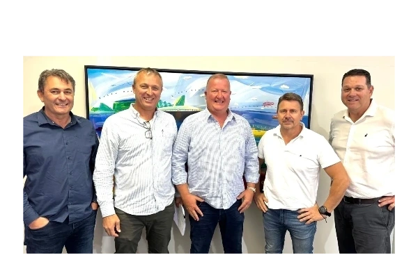

<!--
  FACILITY SECTION — preserved from 01-gateway.html (removed from the homepage).
  Intended for the separate About page.

  Dependencies (copy from 01-gateway.html if the About page has its own stylesheet):
    - :root variables: --pad, --line, --paper, --paper-dim, --ink, --ink-50, --ink-70, --serif, --sans
    - .wrap, .eyebrow, .rule, .section-title, .reveal (+ reveal IntersectionObserver JS)
    - Parallax: the homepage script block "Gentle parallax on the facility banner"
      drives [data-parallax]; include it on the About page.
  Assets used: ../assets/reach-stacker.png, ../assets/getty-2149706245.jpg, ../assets/team.png
-->
<style>
  /* ---------- Facility ---------- */
  .facility-banner{
    position:relative;
    height:clamp(320px,48vh,480px);
    overflow:hidden;
  }
  .facility-banner img{
    width:100%;height:130%;object-fit:cover;object-position:50% 40%;
    will-change:transform;
  }
  .facility-banner::after{
    content:"";position:absolute;inset:0;
    background:linear-gradient(to bottom,rgba(10,27,49,0) 55%,rgba(10,27,49,.55) 100%);
  }
  .facility-banner figcaption{
    position:absolute;left:var(--pad);bottom:28px;z-index:2;
    color:var(--paper);
    font-size:11px;font-weight:500;letter-spacing:.22em;text-transform:uppercase;
    display:flex;align-items:center;gap:16px;
  }
  .facility-grid{
    display:grid;
    grid-template-columns:repeat(12,1fr);
    gap:clamp(24px,3vw,48px);
    margin-top:clamp(38px,5vw,60px);
    align-items:start;
  }
  .facility-copy{grid-column:1/6}
  .facility-copy p{font-size:15px;line-height:1.85;color:var(--ink-70);margin-top:22px;max-width:44ch}
  .facility-copy p strong{color:var(--ink);font-weight:600}
  .facility-address{
    margin-top:34px;padding-top:26px;border-top:1px solid var(--line);
    display:grid;gap:6px;
  }
  .facility-address .k{font-size:10px;font-weight:600;letter-spacing:.22em;text-transform:uppercase;color:var(--ink-50)}
  .facility-address .v{font-family:var(--serif);font-size:19px;line-height:1.5}
  .facility-people{
    grid-column:7/13;
    display:grid;grid-template-columns:1.15fr 1fr;gap:clamp(16px,2vw,28px);
    align-items:start;
  }
  .facility-people figure{overflow:hidden}
  .facility-people img{width:100%;aspect-ratio:4/4.6;object-fit:cover}
  .facility-people figure:last-child{margin-top:clamp(28px,4vw,64px)}
  .facility-people img.team{aspect-ratio:3/2;object-fit:cover;background:#fff}
  .facility-people figcaption{
    margin-top:12px;
    font-size:10px;font-weight:600;letter-spacing:.2em;text-transform:uppercase;color:var(--ink-50);
  }
  @media (max-width:900px){
    .facility-copy{grid-column:1/-1}
    .facility-people{grid-column:1/-1}
  }
</style>

<!-- ============ FACILITY ============ -->
<section class="section-pad" id="facility" style="padding-top:0">
  <figure class="facility-banner reveal">
    
    <figcaption><span class="rule"></span>The Epping facility — own reach stacker at work</figcaption>
  </figure>
  <div class="wrap">
    <div class="facility-grid">
      <div class="facility-copy reveal">
        <p class="eyebrow" style="color:var(--ink-50);display:flex;align-items:center;gap:16px;margin-bottom:20px"><span class="rule"></span>The facility</p>
        <h2 class="section-title">A consolidation centre at the <em>gateway.</em></h2>
        <p>
          Positioned in Epping Industria with direct access to port, road and market
          infrastructure, the facility operates as a <strong>fully utilised container
          consolidation centre</strong> — strengthening the fruit supply chain for growers,
          exporters and shipping-line partners alike.
        </p>
        <div class="facility-address">
          <span class="k">Operating facility</span>
          <span class="v">19–21 Cochrane Avenue, Epping, Cape Town, 7460</span>
        </div>
      </div>
      <div class="facility-people reveal" data-delay="1">
        <figure>
          
          <figcaption>Dedicated, full-time ground team</figcaption>
        </figure>
        <figure>
          
          <figcaption>Fiesta Fresh leadership</figcaption>
        </figure>
      </div>
    </div>
  </div>
</section>
